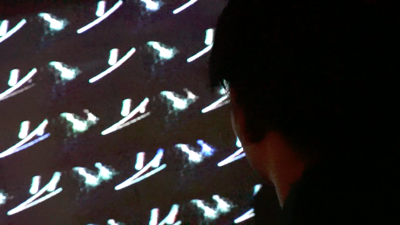
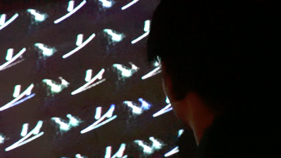

Launch Party - ダイジェスト
2019.06 / Digest Movie / Director, Cinematographer & Editor / 6min 38sec
 

2019/05/11にFrogで行ったTparty主催イベント「Launch party」のダイジェスト映像。
Credits
- Director, Cinematographer, Editor : Tomoya Onuki
- Producer : TParty Twitter
- Special Thanks : Frog